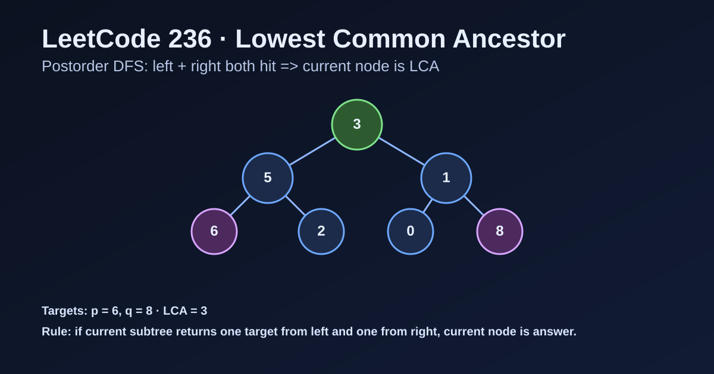

LeetCode 236: Lowest Common Ancestor of a Binary Tree (Postorder DFS)
LeetCode 236Binary TreeDFSRecursionToday we solve LeetCode 236 - Lowest Common Ancestor of a Binary Tree.
Source: https://leetcode.com/problems/lowest-common-ancestor-of-a-binary-tree/

English
Problem Summary
Given the root of a binary tree and two nodes p and q, return their lowest common ancestor (LCA): the lowest node that has both p and q in its subtree (a node can be a descendant of itself).
Key Insight
Use postorder DFS. For each node, recursively ask left and right subtrees for matches. If both sides return non-null, current node is the LCA. If only one side returns non-null, bubble that node up.
Brute Force and Why Insufficient
A brute-force strategy can repeatedly search whether p and q lie in a subtree for every node, leading to O(n^2) in skewed trees. We can do it in one traversal.
Optimal Algorithm (Step-by-Step)
1) If current node is null, return null.
2) If current node equals p or q, return current node.
3) Recurse to left and right children.
4) If both left and right are non-null, current node is LCA.
5) Otherwise return whichever side is non-null.
Complexity Analysis
Time: O(n), each node visited once.
Space: O(h) recursion stack, where h is tree height (worst-case O(n)).
Common Pitfalls
- Treating it like BST LCA (this problem is a general binary tree).
- Returning current node too early before collecting both sides.
- Forgetting a node can be ancestor of itself.
- Mixing up node values and node references in languages with object identity.
Reference Implementations (Java / Go / C++ / Python / JavaScript)
class Solution {
public TreeNode lowestCommonAncestor(TreeNode root, TreeNode p, TreeNode q) {
if (root == null || root == p || root == q) return root;
TreeNode left = lowestCommonAncestor(root.left, p, q);
TreeNode right = lowestCommonAncestor(root.right, p, q);
if (left != null && right != null) return root;
return left != null ? left : right;
}
}func lowestCommonAncestor(root, p, q *TreeNode) *TreeNode {
if root == nil || root == p || root == q {
return root
}
left := lowestCommonAncestor(root.Left, p, q)
right := lowestCommonAncestor(root.Right, p, q)
if left != nil && right != nil {
return root
}
if left != nil {
return left
}
return right
}class Solution {
public:
TreeNode* lowestCommonAncestor(TreeNode* root, TreeNode* p, TreeNode* q) {
if (!root || root == p || root == q) return root;
TreeNode* left = lowestCommonAncestor(root->left, p, q);
TreeNode* right = lowestCommonAncestor(root->right, p, q);
if (left && right) return root;
return left ? left : right;
}
};# Definition for a binary tree node.
# class TreeNode:
# def __init__(self, x):
# self.val = x
# self.left = None
# self.right = None
class Solution:
def lowestCommonAncestor(self, root: 'TreeNode', p: 'TreeNode', q: 'TreeNode') -> 'TreeNode':
if not root or root == p or root == q:
return root
left = self.lowestCommonAncestor(root.left, p, q)
right = self.lowestCommonAncestor(root.right, p, q)
if left and right:
return root
return left if left else rightvar lowestCommonAncestor = function(root, p, q) {
if (!root || root === p || root === q) return root;
const left = lowestCommonAncestor(root.left, p, q);
const right = lowestCommonAncestor(root.right, p, q);
if (left && right) return root;
return left ? left : right;
};中文
题目概述
给定二叉树根节点 root 以及两个节点 p、q，返回它们的最近公共祖先（LCA）：即在树中同时包含 p 和 q 的最低节点（节点本身也可作为自己的后代）。
核心思路
采用后序 DFS。对每个节点，先问左右子树是否找到目标：若左右都返回非空，当前节点就是 LCA；若只有一边非空，就把该结果向上返回。
暴力解法与不足
暴力法可以对每个节点反复判断其子树是否包含 p/q，在退化树下可能达到 O(n^2)。其实一次遍历即可完成。
最优算法（步骤）
1）当前节点为空，返回 null。
2）当前节点是 p 或 q，直接返回当前节点。
3）递归查询左右子树。
4）若左右都非空，当前节点即最近公共祖先。
5）否则返回非空的那一侧。
复杂度分析
时间复杂度：O(n)，每个节点访问一次。
空间复杂度：O(h)，为递归栈深度，最坏 O(n)。
常见陷阱
- 误用 BST 的 LCA 规则（本题是普通二叉树）。
- 没等左右子树结果就提前返回当前节点。
- 忘记“节点可以是自己的祖先”。
- 在某些语言里把“节点值相等”误当成“节点引用相同”。
多语言参考实现（Java / Go / C++ / Python / JavaScript）
class Solution {
public TreeNode lowestCommonAncestor(TreeNode root, TreeNode p, TreeNode q) {
if (root == null || root == p || root == q) return root;
TreeNode left = lowestCommonAncestor(root.left, p, q);
TreeNode right = lowestCommonAncestor(root.right, p, q);
if (left != null && right != null) return root;
return left != null ? left : right;
}
}func lowestCommonAncestor(root, p, q *TreeNode) *TreeNode {
if root == nil || root == p || root == q {
return root
}
left := lowestCommonAncestor(root.Left, p, q)
right := lowestCommonAncestor(root.Right, p, q)
if left != nil && right != nil {
return root
}
if left != nil {
return left
}
return right
}class Solution {
public:
TreeNode* lowestCommonAncestor(TreeNode* root, TreeNode* p, TreeNode* q) {
if (!root || root == p || root == q) return root;
TreeNode* left = lowestCommonAncestor(root->left, p, q);
TreeNode* right = lowestCommonAncestor(root->right, p, q);
if (left && right) return root;
return left ? left : right;
}
};class Solution:
def lowestCommonAncestor(self, root: 'TreeNode', p: 'TreeNode', q: 'TreeNode') -> 'TreeNode':
if not root or root == p or root == q:
return root
left = self.lowestCommonAncestor(root.left, p, q)
right = self.lowestCommonAncestor(root.right, p, q)
if left and right:
return root
return left if left else rightvar lowestCommonAncestor = function(root, p, q) {
if (!root || root === p || root === q) return root;
const left = lowestCommonAncestor(root.left, p, q);
const right = lowestCommonAncestor(root.right, p, q);
if (left && right) return root;
return left ? left : right;
};
Comments